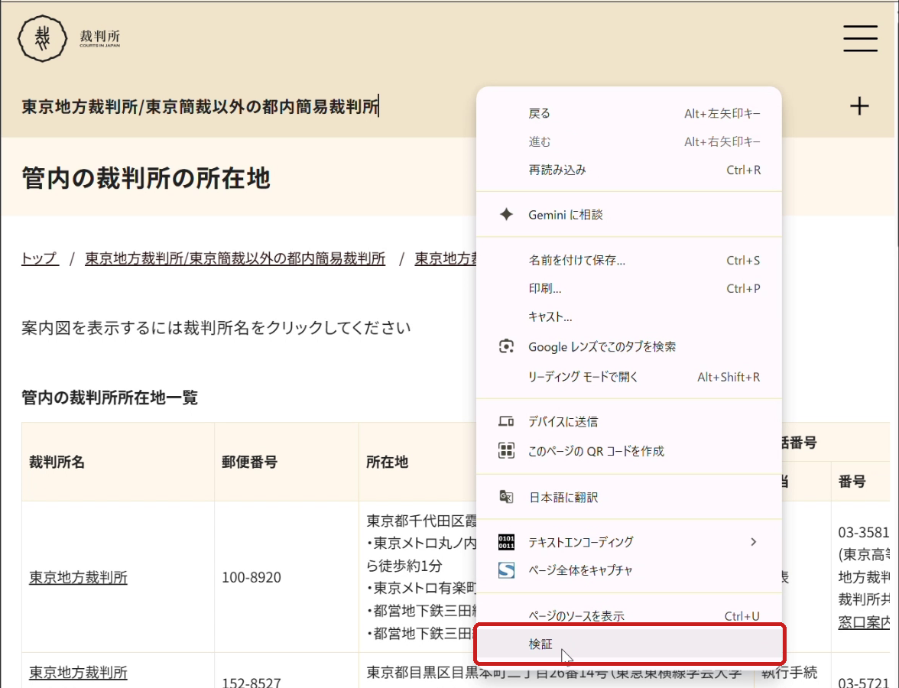
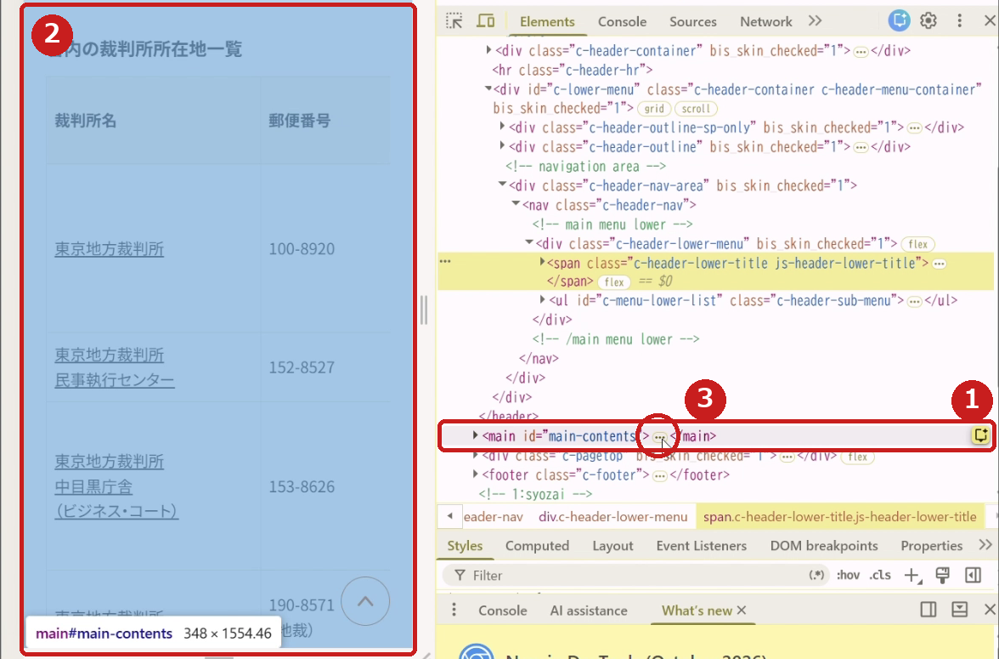
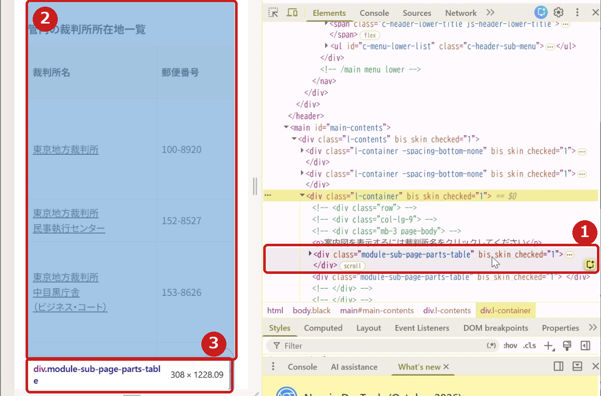

第3部 データを集める
ウェブのページから表を取る
ウェブサイトに貼られている表を、手で写さずにそのままtibbleにします。使うのはrvestというパッケージです。
これまでやってきたのは、すでに手元にあるデータ、誰かが分析用に整えてくれたデータを分析したり、あるいは可視化したりするといった作業でした。ただ実際には、そういった準備や下ごしらえがすんだデータが存在しない、といったことがあります。
そういうときには、データを自分で集めなくてはいけません。たとえばウェブサイトに何か表があって、これを分析したいなと思ったとしましょう。
文字や数字は確かにそこにあります。一つひとつ、Excelに手入力することだってできます。が、めんどくさい。運が良ければ、表部分をExcelにコピペしたときに、その表形式がそのままうまく保存されてくれますが、形がガタガタに崩れてしまうこともよくあります。
そういうときに役に立つのがスクレイピングです。これをやるためのいろんなパッケージがPythonにはそろっているらしいですが、実はRでもぜんぜんできちゃいます。rvestというパッケージを、まずインストールして呼び出しましょう。
install.packages("rvest") # インストールは最初の1回だけ
library(rvest)表を読み込む
準備OK、というわけで、まず最初に裁判所のウェブサイトでやってみましょう。東京地裁の管内にある裁判所の連絡先や住所などをまとめたページです。こんなコードを書きます。
"https://www.courts.go.jp/tokyo/about/syozai/index.html" %>%
read_html() %>%
html_element("table") %>%
html_table()まず最初にURLを二重引用符つきで書いて、パイプ演算子で次に回します。受け取った read_html() という関数で、そのURLにあるhtmlの文章を丸ごと読み込みます。
その次にある html_element("table") は、受け取った文章のなかからtableつまり表になっている要素を見つけて、そこだけを抜き出しなさいという命令。さらに html_table() という関数で、その抜き出した表をtibbleに変えるというわけです。
# A tibble: 14 × 5
裁判所名 郵便番号 所在地 電話番号 電話番号
<chr> <chr> <chr> <chr> <chr>
1 裁判所名 郵便番号 所在地 "担当" 番号
2 東京地方裁判所 100-8920 東京都千代… "代表" 03-3581…
3 東京地方裁判所民事執行センター 152-8527 東京都目黒… "執行手続案内… 03-5721…
4 東京地方裁判所中目黒庁舎（ビジネス・コート）…… 153-8626 東京都目黒… "事務課庶務係… 03-5721…
5 東京地方裁判所立川支部立川簡易裁判所 190-857… 東京都立川… "" ダイヤルイン一…
6 東京簡易裁判所 100-8971 東京都千代… "代表" 03-3581…
# ℹ 8 more rows場所を絞り込む
で、今回はこれでうまくいきました。ただ実際には、一つのページに複数の表が載っていたりするケースもあります。
気にせずに、ページに載ってる表をぜんぶ抜き出して、そのうち必要なものだけを後から選ぶという手順もあって、それでもまあOK、ではあるんですが、もうちょっとスマートな手順もあります。html_element() の段階で、もっと絞り込んでしまうというやりかたです。
絞り込むにはまず、htmlのソースを確認する必要があります。ちょっとだけめんどくさいんですが、急がば回れと申しますし、なれれば実はたいした手間でもありません。
ブラウザで先ほどのページを開いて、画面のどこかで右クリックすると、ウィンドーが出てきます。そのなかに「検証」とか「開発者ツールで調査する」という項目がありますよね。これを選択してください。

すると、右側にhtmlのコードが出てきます。右側のコードにカーソルを合わせるとサイトを表示した左側の部分に青っぽい色がついて、カーソルを移動させると青っぽい色がかかる部分も動きます。これによって、いまカーソルを合わせているコードが、ページのどこを記述しているものなのかが分かるわけです。

<main>）にカーソルを合わせると、② ページのその部分が青くなり、名前の札も出る。③ 「…」をクリックすると、その中身が開くhtmlのコードは最初、「折りたたまれた」状態で出てきますが、左の三角（▶）や「...」の部分をクリックすると、中身を確認できるようになっています。その作業を繰り返すことで、表に対応したコードの容器のことを示す記号<div class="xxxxx"> というのを探します。今回の場合、xxxxxには「module-sub-page-parts-table」という名前が入っているのが分かります。

module-sub-page-parts-table の行に合わせると、② 表だけが青くなり、③ 「div.module-sub-page-parts-table」という札が出る操作の様子を動画で見る（約40秒、字幕つき、音声なし）
つまり、スクレイピングしたい表は「module-sub-page-parts-table」と名付けられた容器（div）の中に入れられているということなのです。html全体ではなく、この容器だけを指定したうえで、その中に入っているtableを抜き出してtibbleにしなさい、というのが以下のコードです。
"https://www.courts.go.jp/tokyo/about/syozai/index.html" %>%
read_html() %>%
html_element("div.module-sub-page-parts-table table") %>%
html_table()上記コードの3行目は、「module-sub-page-parts-tableという領域（div）の中にあるtable要素を一つ取得する」ということを意味しています。div. のあとに名前を続けると「この名前のついたdiv」、そのあとに半角スペースをはさんで table と書くと「その中にあるtable」という意味になります。こういう書き方を「CSSセレクタ」と呼びます。細かいですが、html_element() ではなく、複数形のsをつけて html_elements() という関数を使うと、複数のtable要素を（もしあれば）とってくることができます。
少しだけお掃除を
ところで、こうやって取ってきたtibbleを見てみると、本来は列名になるべきようなデータが1行目の中身になってしまっていますね。これは元のウェブサイトにある表の「電話番号」の列名にあたる部分が2行に分かれてしまっていたからです。
列名のほうも「電話番号」が二つ並んでしまっています。同じ名前の列が二つあると、Rはこのあとの加工をさせてくれません。というわけで、まず4列目の名前を変えてから、1行目を捨てる、という順番で、データを少しだけお掃除（これをデータクリーニングと呼びます）する必要があります。
tokyo <- "https://www.courts.go.jp/tokyo/about/syozai/index.html" %>%
read_html() %>%
html_element("div.module-sub-page-parts-table table") %>%
html_table()
tokyo %>%
rename(担当 = 4) %>% # 4列目の名前を「担当」に変える
slice(-1) # 1行目を捨てるrename() は05章で使いましたね。あのときは古い列名を書きましたが、ここでは同じ名前が二つあって区別できないので、「左から4番目」という番号で列を指定しています。
slice() は、何行目を残すかを番号で指定する関数です。slice(-1) のようにマイナスをつけると、「1行目以外を残す」、つまり1行目を捨てるという意味になります。
# A tibble: 13 × 5
裁判所名 郵便番号 所在地 担当 電話番号
<chr> <chr> <chr> <chr> <chr>
1 東京地方裁判所 100-8920 東京都千代… "代表"… 03-3581…
2 東京地方裁判所民事執行センター 152-8527 東京都目黒… "執行手… 03-5721…
3 東京地方裁判所中目黒庁舎（ビジネス・コート）…… 153-8626 東京都目黒… "事務課… 03-5721…
4 東京地方裁判所立川支部立川簡易裁判所 190-857… 東京都立川… "" ダイヤルイン一…
5 東京簡易裁判所 100-8971 東京都千代… "代表"… 03-3581…
6 東京簡易裁判所墨田庁舎 130-863… 東京都墨田… "訟廷事… 03-5819…
# ℹ 7 more rows次の章では、東京地裁の管内だけでなく、全国の裁判所の連絡先を一気に集めます。ページごとに同じコードを書く代わりに、読みたいページのURLのリストを作って、for文で回します。